Jogos PS3
Alice Madness Returns (PT-BR)
Jogo completo, legendado em português, dividido em 2 partes. Inclui DLCs e tradução PT-BR.
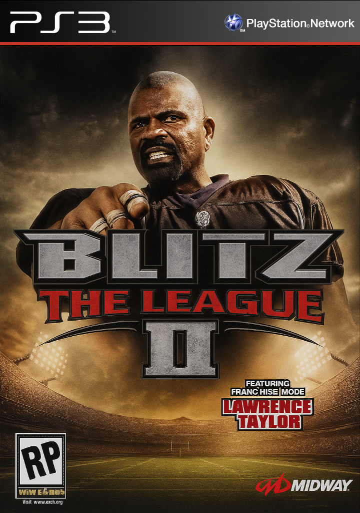
Blitz The League II
Jogo completo, Em Inglês, dividido em 5 partes.
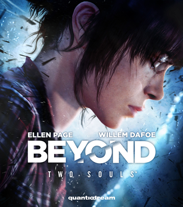
Beyond: Two Souls (PT-BR)
Jogo completo dublado e legendado em português, dividido em 7 partes no formato PKG.
Inclui DLCs adicionais com conteúdos extras e um fix para compatibilidade em consoles com firmware 4.50+.
Parte 1
Parte 2
Parte 3
Parte 4
Parte 5
Parte 6
Parte 7
🛠️ DLCs:
Patch de DLC
DLC Experimentos Avançados
DLC Fix (4.50+)
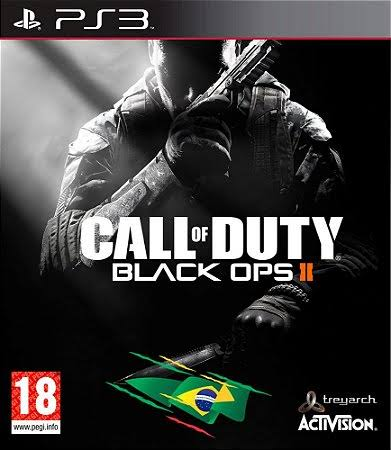
Call of Duty: Black Ops 2 (PT-BR)
Jogo completo dublado e legendado em português, dividido em 6 partes no formato PKG.
Arquivos do jogo:
DLCs inclusas:
Conteúdos extras com mapas e modos adicionais.
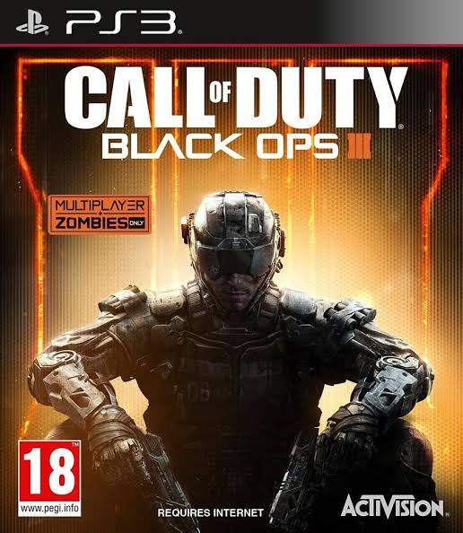
Call of Duty: Black Ops 3 (PT-BR)
Jogo completo dublado e legendado em português, dividido em 5 partes no formato PKG.
Arquivos do jogo:
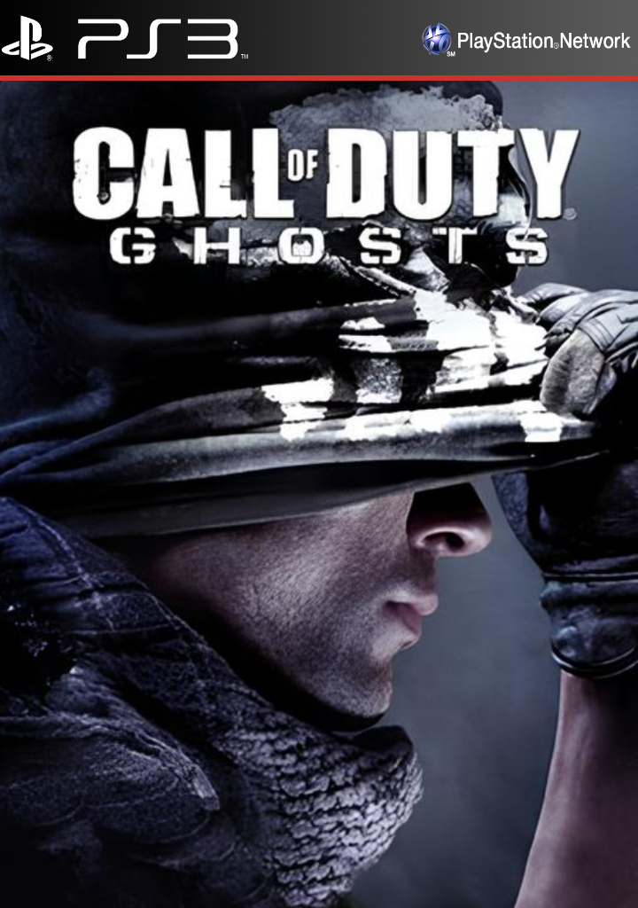
Call of Duty: Ghosts (PT-BR)
Jogo completo dublado e legendado em português, em formato PKG. Dividido em 4 partes + DLCs.
Arquivos do jogo:
DLCs inclusas:
Conteúdos extras com mapas, modos e atualizações.
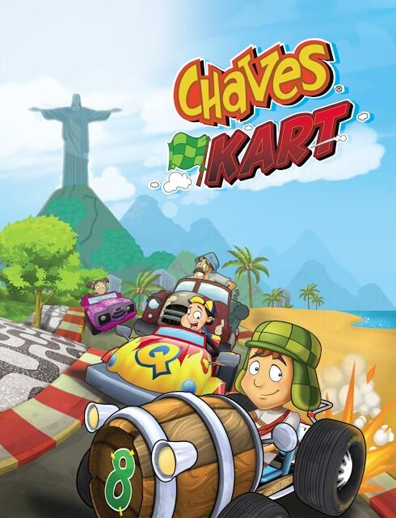
Chaves Kart (PT-BR)
Jogo dublado e legendado em português, em parte única.
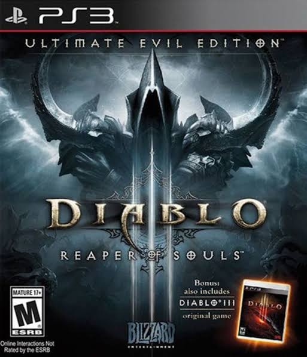
Diablo III: Reaper Of Souls (PT-BR)
Jogo completo, dublado e legendado em português, dividido em 8 partes.
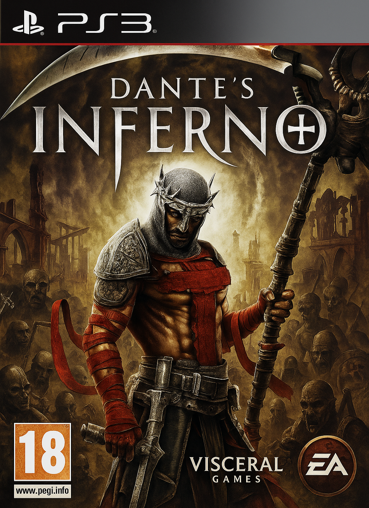
Dante's Inferno (PT-BR)
Jogo completo legendado em português, dividido em 4 partes no formato PKG. Versão funcional com tradução aplicada em menus, legendas e falas principais. Não possui dublagem, mas está totalmente compreensível para quem prefere jogar em português.
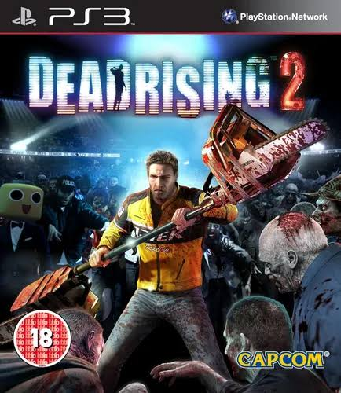
Dead Rising 2 (PT-BR)
Jogo completo legendado em português, dividido em partes no formato PKG. Versão funcional com tradução aplicada em menus, legendas e falas principais. Não possui dublagem, mas está totalmente compreensível para quem prefere jogar em português.
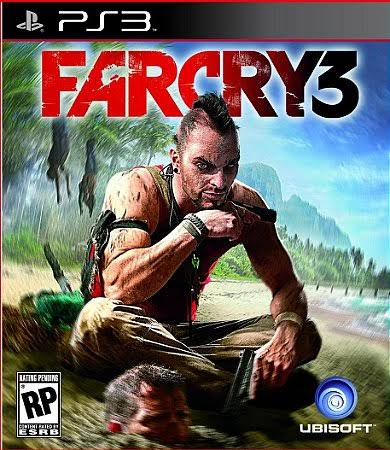
Far Cry 3 (PT-BR)
Jogo completo, legendado em português, dividido em 2 partes. Inclui licença para ativação no jogo.
FIFA 14 (PT-BR)
Jogo completo, dividido em 4 partes no formato .Pkg.
FIFA 15 (PT-BR)
Jogo completo, Dublado e legendado. Dividido em 4 partes no formato .Pkg.
FIFA 19 Legacy Edition (PT-BR)
Jogo em português com patch obrigatório incluso.
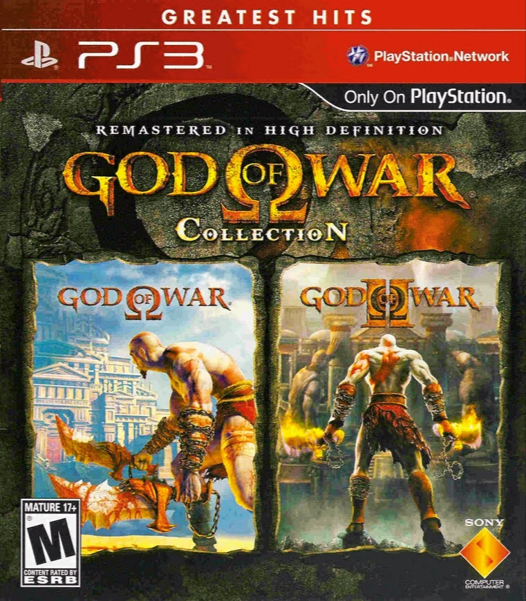
God Of War Collection HD (PT-BR)
Jogo legendado em português, dividido em 6 partes no formato .Pkg.
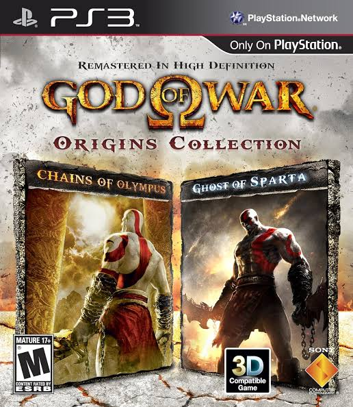
God Of War: Origins Collection HD Volume 2 (PT-BR)
Jogo em português, dividido em 5 partes. Inclui os dois jogos da coleção Origins.
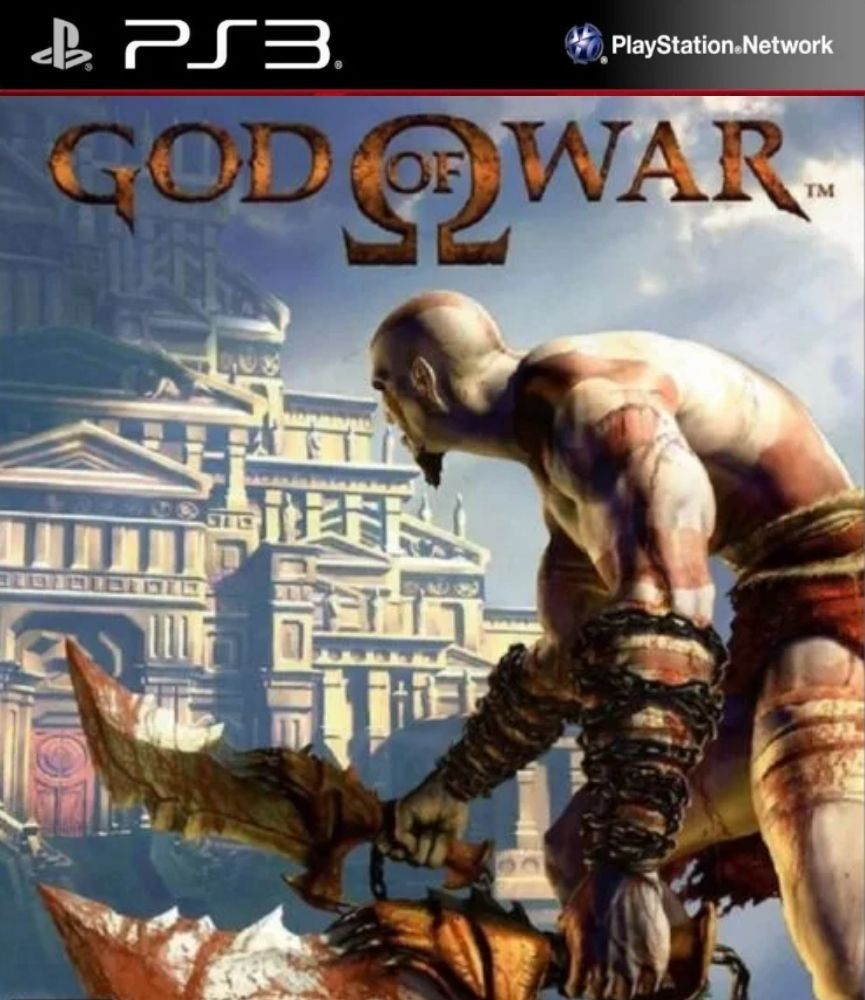
God Of War HD (PT-BR)
Jogo dublado por IA em português, dividido em 2 partes. Está no formato splitado (.66600), então recomenda-se assistir um tutorial no YouTube para a instalação.
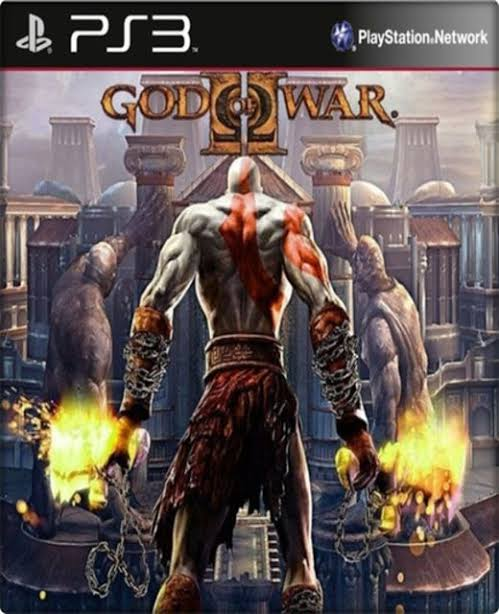
God Of War II (PT-BR)
Jogo dublado em português por inteligência artificial.
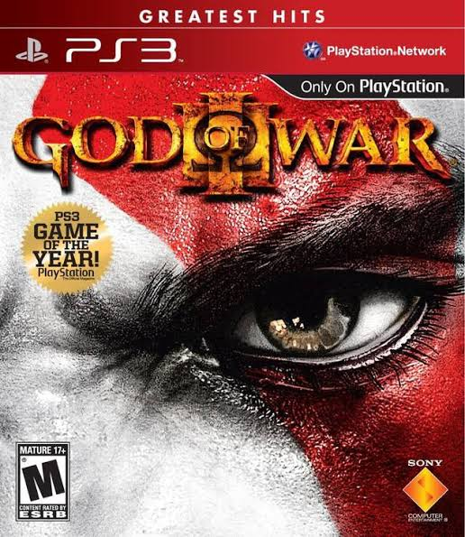
GOD OF WAR III (PT-PT)
Jogo dublado em português de Portugal, inclui também dublagens em inglês. Dividido em 15 partes.
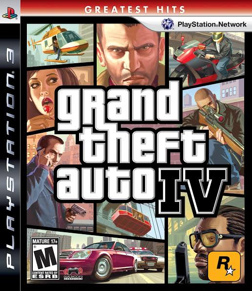
Grand Theft Auto IV (PT-BR)
Jogo legendado em português, dividido em 3 partes.
Observação: A tradução pode causar travamentos nas missões "Search and Delete", "Portrait of a Killer" e "Smackdown". Se isso ocorrer, basta mudar o idioma para inglês, concluir a missão e retornar ao idioma com tradução.
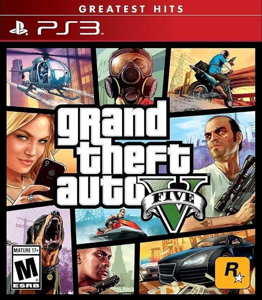
Grand Theft Auto V (PT-BR)
Jogo legendado em português. Versão BLUS dividida em 5 partes no formato PKG. Também disponível a versão BLES em formato ISO. Inclui opções de MOD MENU separadas para diferentes IDs.
BLUS - Formato PKG: BLES - Formato ISO: MOD MENU: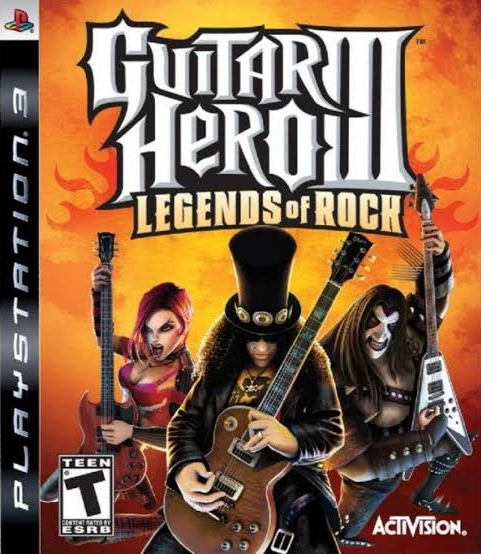
GUITAR HERO III: Legends Of Rock
Jogo completo, com suporte total ao controle (joystick).
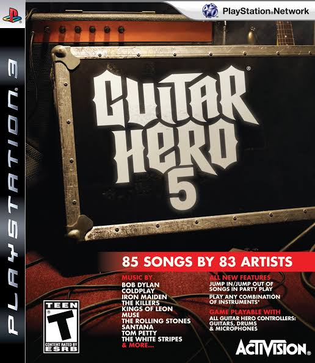
GUITAR HERO 5
Jogo totalmente funcional com controle. Para ativar, vá até o menu Debug e ative a opção In Game Allow Controller. Depois disso, jogue normalmente.
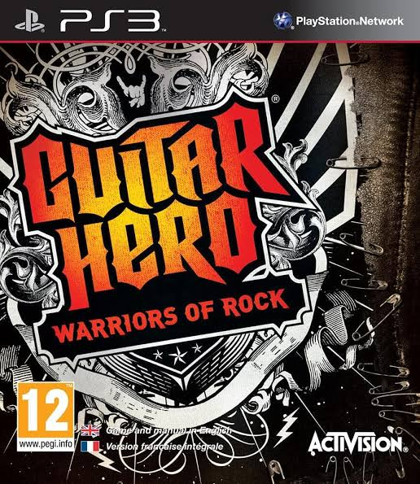
GUITAR HERO: Warriors Of Rock
Instale as duas partes do jogo. Inicie pelo Multiman e entre no menu. Após isso, saia do jogo, instale a DLC e reinicie. O jogo estará pronto para jogar.
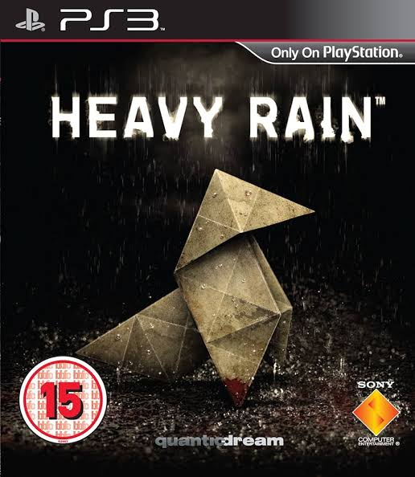
Heavy Rain (PT-PT)
Jogo completo em português europeu, com DLC opcional.
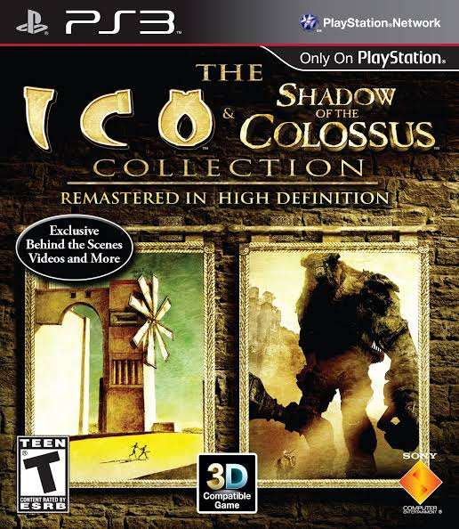
ICO & SHADOW OF THE COLOSSUS HD (PT-BR)
Jogo 2 em 1 legendado em português. Inclui ICO e Shadow of the Colossus em HD.
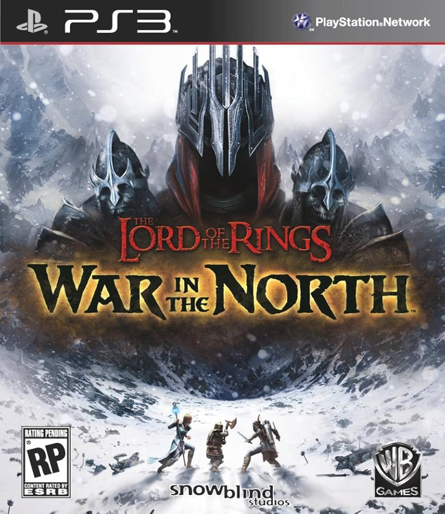
LORD OF THE RINGS: WAR IN THE NORTH (PT-BR)
Jogo completo, Legendado em português, dividido em 4 partes no formato .Pkg.
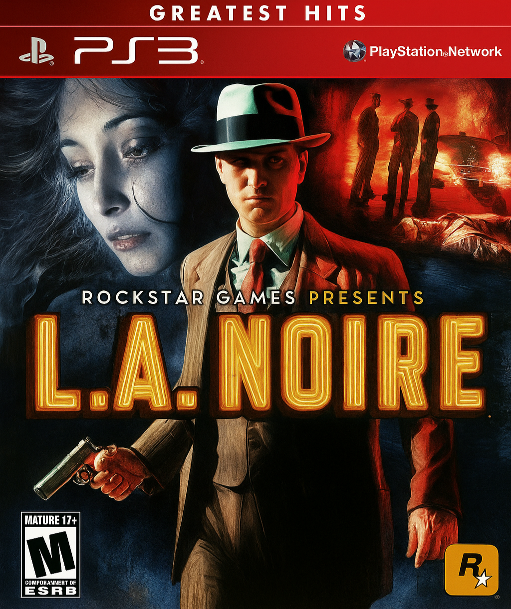
L.A. NOIRE (PT-BR)
Jogo completo, Legendado em português, dividido em 6 partes no formato .Pkg.
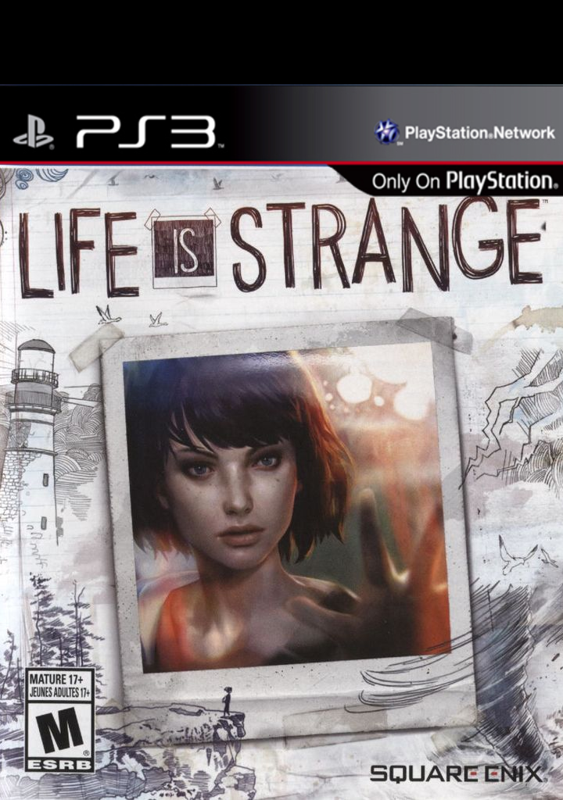
Life Is Strange (PT-BR)
Jogo completo legendado em português. Contém todas as partes, licença, patch e fix dos episódios.
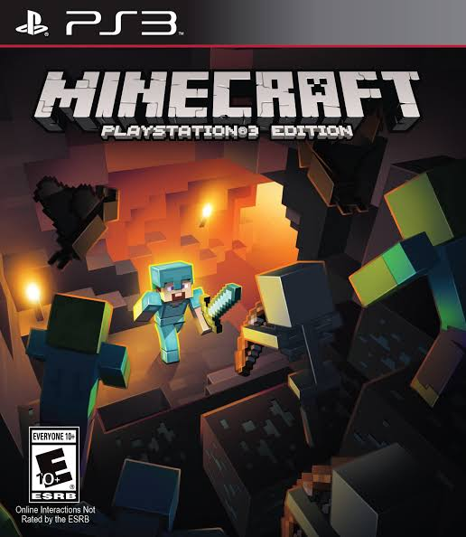
Minecraft - Playstation®3 Edition (PT-BR)
Jogo legendado em português, dividido em 2 partes + DLC, Licenças e Fix (Instale na ordem: Parte 1, patch, licença e fix).
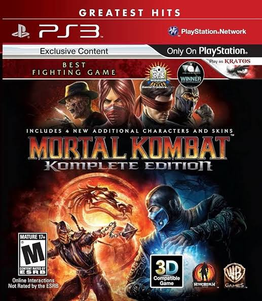
Mortal Kombat: Komplete Edition (PT-BR)
Jogo legendado em português, dividido em 5 partes.
PES 2015 (PT-BR)
Jogo completo, Dublado e legendado em português, dividido em 3 partes.
PES 2015 (PT-BR)
Jogo completo, Dublado e legendado em português, dividido em 4 partes.
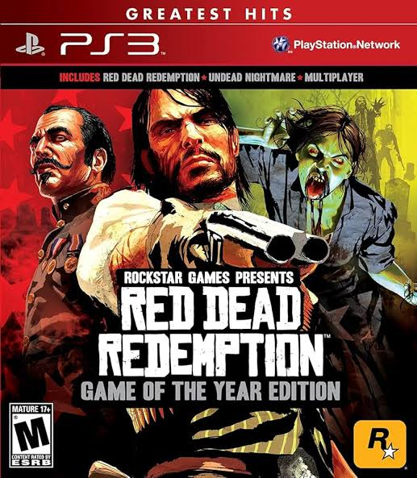
Red Dead Redemption - GOTY (PT-BR)
Jogo completo, legendado em português, com a tradução em PKG separada.
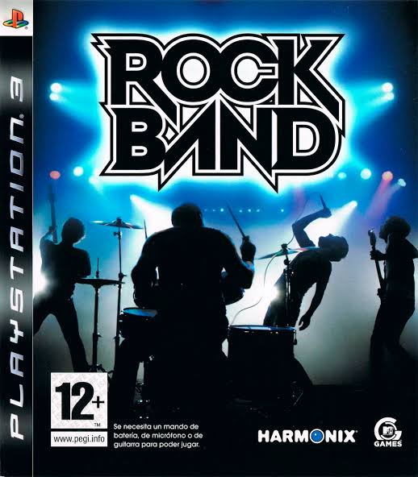
Rock Band
Jogo funcional com controle. Vá em Options > Controller Settings > "Pad is", aperte X e selecione Guitar.
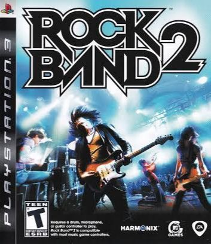
Rock Band 2 DELUXE
Para jogar no controle, vá em Menu Extras > Modifiers e ative "PAD IS GUITAR" ou "PAD IS DRUM". Instale todas as partes e o patch por último.
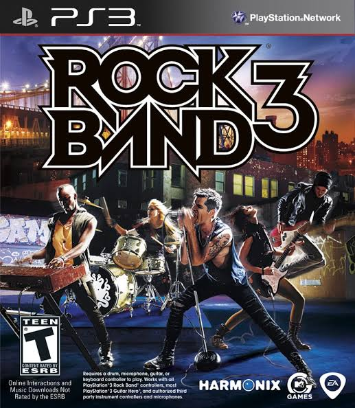
Rock Band 3 DELUXE
Para ativar a versão DELUXE, instale as 4 partes do jogo e em seguida o patch.
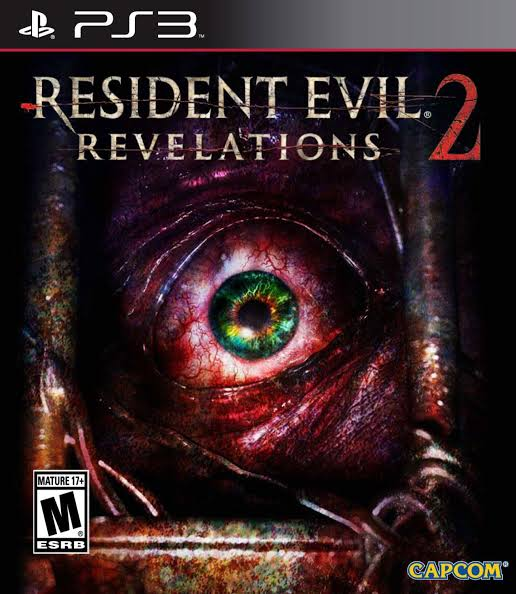
Resident Evil: Revelations 2 (PT-BR)
Jogo completo, dividido em 4 partes no formato .Pkg.
Resident Evil 4 HD (PT-BR)
Versão HD de Resident Evil 4 para PS3, disponível nas versões dublada e legendada em português.
Dublado:Legendado:
OBS: Após instalar a tradução, é necessário mudar o idioma do console ou emulador para espanhol; caso contrário, ela não funcionará corretamente.
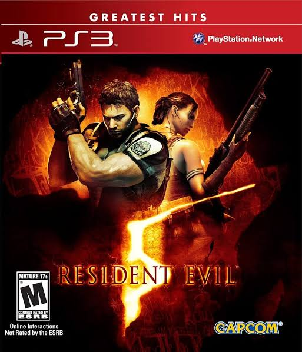
Resident Evil 5: Gold Edition (PT-BR)
Jogo completo dublado e legendado em português. A dublagem foi feita com o uso de inteligência artificial.
Arquivos do jogo: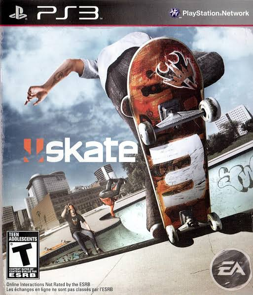
Skate 3
Versão funcional e testada. Não possui tradução em português, pois não existem versões localizadas oficialmente ou por fãs.
Arquivos do jogo: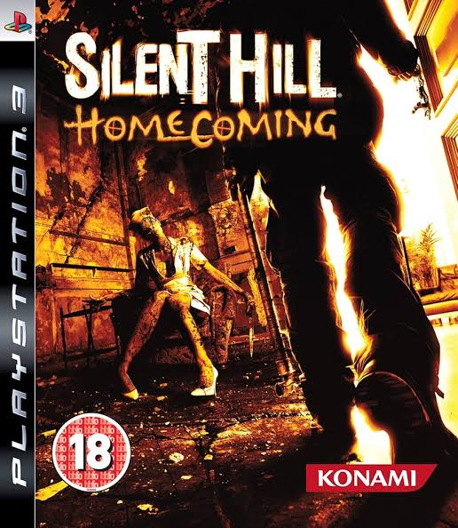
Silent Hill HomeComing (PT-BR)
Jogo completo legendado em português, dividido em 2 partes no formato PKG.
Arquivos do jogo: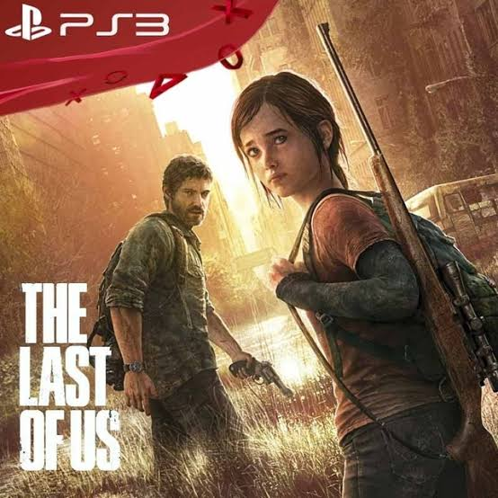
The Last of Us + DLC (PT-BR)
Jogo completo dublado e legendado em português, dividido em 9 partes no formato PKG.
Inclui todas as DLCs originais.
Recomendado manter pelo menos 10 GB livres no celular ou mais, para enviar via ftp.
Extraia os arquivos com o ZArchive no celular, se necessário.
- 1 - Left Behind
- 2 - Abandoned Territories
- 3 - Reclaimed Territories
- 4 - Treacherous Territories
- 5 - ALL DLC FIX v5
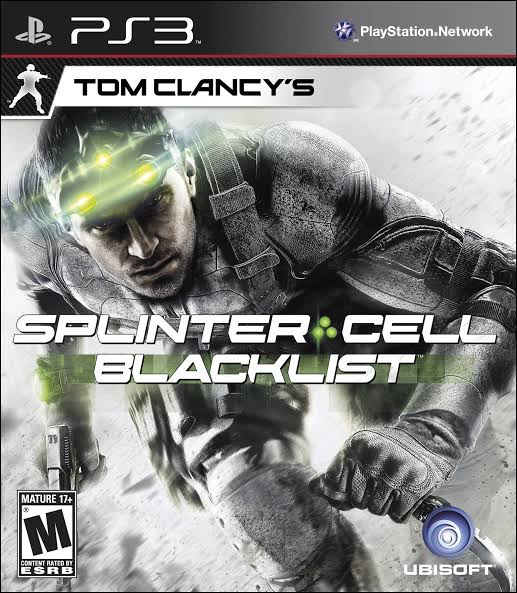
Tom Clancy's Splinter Cell Blacklist (PT-BR)
Jogo Dublado e legendado em português, dividido em 3 partes mais a licença.
Arquivos do jogo: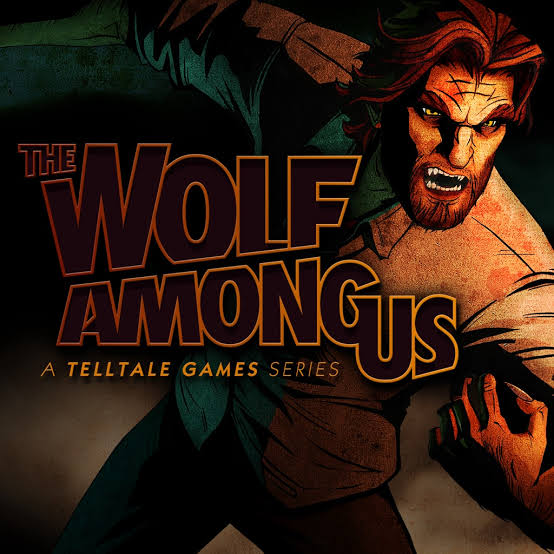
The Wolf Among Us (PT-BR)
Jogo legendado em português, dividido em 2 partes. Algumas falas dos capítulos 1 a 3 podem ficar mudas, mas o restante do jogo funciona normalmente.
Arquivos do jogo: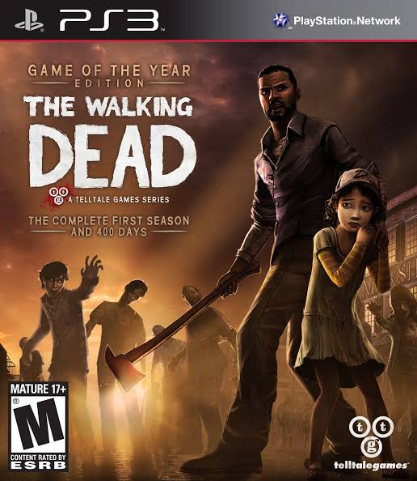
The Walking Dead - GOTY (PT-BR)
Jogo legendado em português, dividido em 2 partes.
Arquivos do jogo: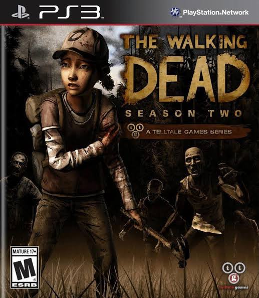
The Walking Dead: Season 2 (PT-BR)
Jogo legendado em português, em parte única.
Arquivos do jogo: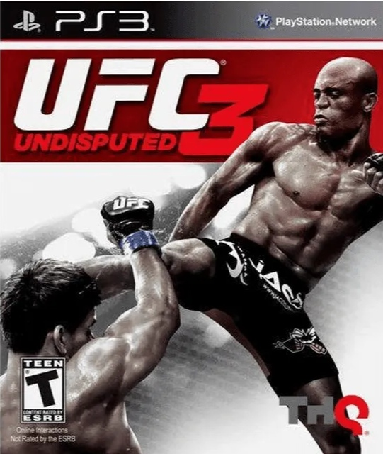
UFC Undisputed 3 (PT-BR)
Jogo completo em português, dividido em 6 partes no formato .Pkg.
Arquivos do jogo: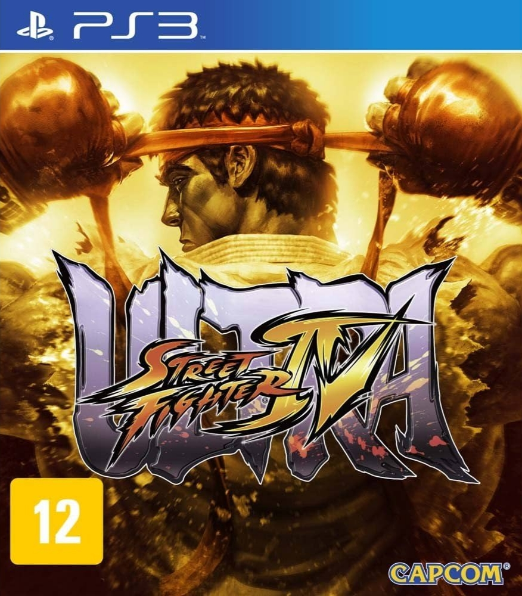
Ultra Street Fighter IV
Versão funcional e testada. Não possui tradução em português, pois não existem versões localizadas oficialmente ou por fãs.
Arquivos do jogo: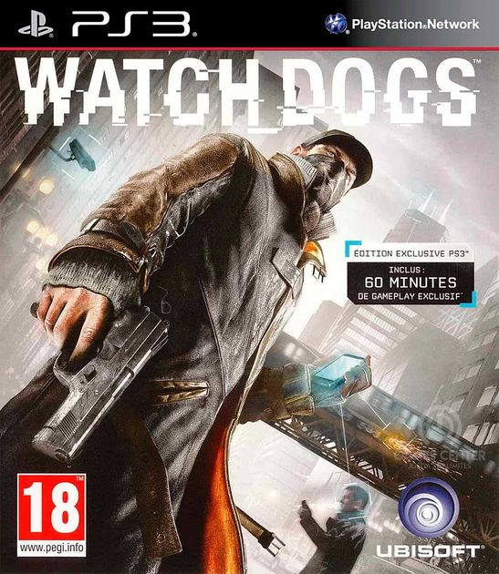
Watch Dogs (PT-BR)
Jogo completo, dublado e legendado em português, dividido em 4 partes + DLC com Update no formato .Pkg.
Arquivos do jogo: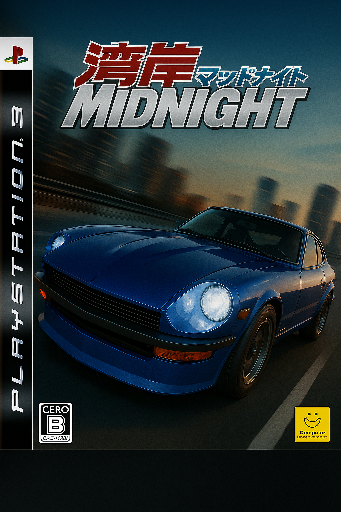
Wangan Midnight (EN)
Jogo raro, completo e totalmente em inglês. Não possui tradução oficial ou feita por fãs.
Arquivos do jogo:Jogos PS2
Jogos PS2 (PKG para PS3)
Jogos de PS2 convertidos para PKG e otimizados para rodar no PS3. Muitos estão dublados ou legendados em português.
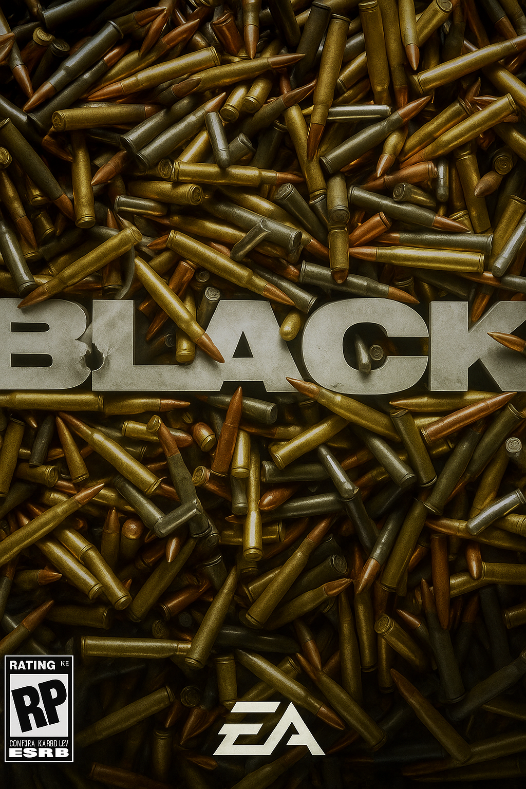
BLACK PT-BR (PKG)
Jogo Dublado e Legendado em português. Versão PS2 adaptada para rodar no PS3.
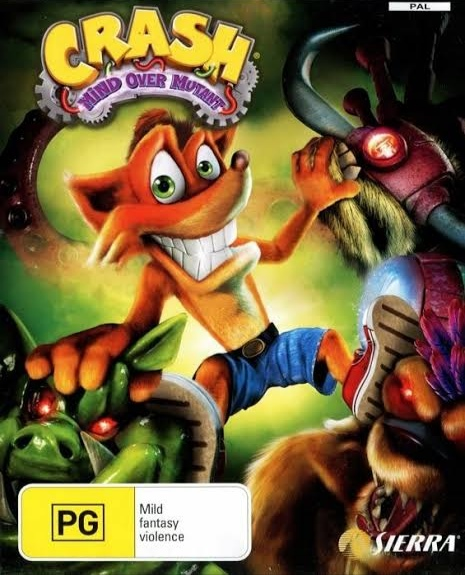
Crash Mind Over Mutant PT-BR (PKG)
Jogo Legendado em português. Versão PS2 adaptada para rodar no PS3.
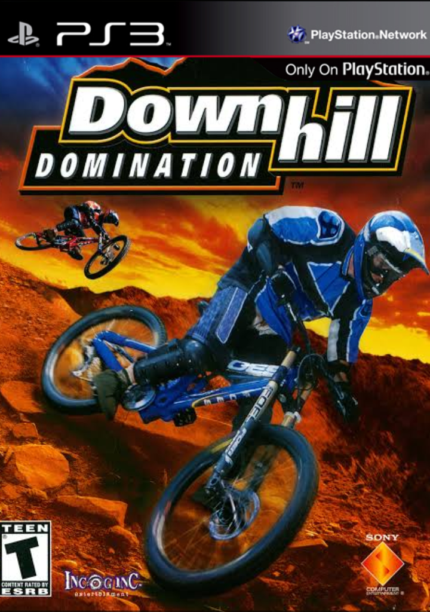
Downhill Domination PT-BR (PKG)
Jogo legendado em português. Versão PS2 adaptada para rodar no PS3.
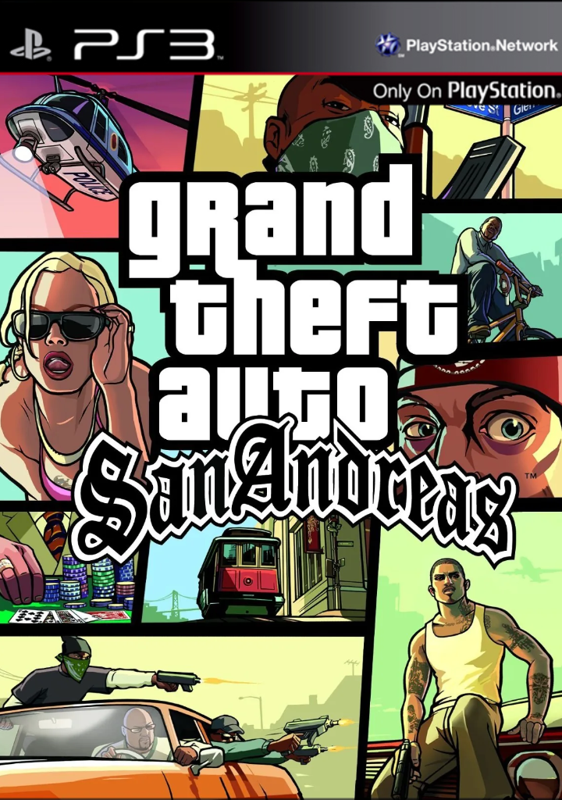
GTA San Andreas PT-BR (PKG)
Jogo legendado em português. Versão PS2 adaptada para rodar no PS3.

Guitar Hero: Brazucas PT-BR (PKG)
Jogo legendado em português, com várias músicas brasileiras. Versão PS2 adaptada para rodar no PS3.
Leisure Suit Larry Magna Cum Laude PT-BR (PKG)
Jogo Legendado em português. Versão PS2 adaptada para rodar no PS3.
Silent Hill 2: Director's cut PT-BR (PKG)
Jogo Dublado e legendado em português. Versão PS2 adaptada para rodar no PS3.
Silent Hill 3 PT-BR (PKG)
Jogo Dublado legendado em português. Versão PS2 adaptada para rodar no PS3.